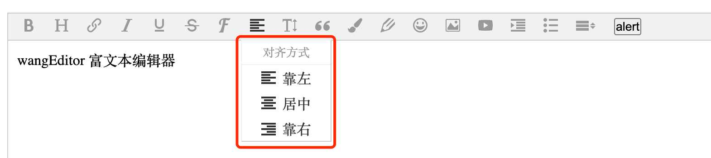

DropList 菜单
DropList 菜单，鼠标 hover 菜单时，显示下拉列表，如下图。

开发一个 DropList 菜单的 class 代码如下。另，注册菜单，和上文过程一样，不再赘述。
// 标题菜单的 class ，可作为 DropList 菜单的参考代码
class Head extends DropListMenu {
constructor(editor) {
// 菜单栏中，标题菜单的 DOM 元素
// 注意，这里的 $ 不是 jQuery ，是 E.$ （wangEditor 自带的 DOM 操作工具，类似于 jQuery）
const $elem = $('<div class="w-e-menu"><i class="w-e-icon-header"></i></div>')
// droplist 配置
const dropListConf = {
width: 100,
title: '设置标题',
type: 'list',
list: [
{ $elem: $('<h1>H1</h1>'), value: '<h1>' },
{ $elem: $('<h2>H2</h2>'), value: '<h2>' },
{ $elem: $('<h3>H3</h3>'), value: '<h3>' },
{ $elem: $('<h4>H4</h4>'), value: '<h4>' },
{ $elem: $('<h5>H5</h5>'), value: '<h5>' },
{ $elem: $('<p>正文</p>'), value: '<p>' },
],
// droplist 每个 item 的点击事件
clickHandler: (value) => {
// value 参数即 dropListConf.list 中配置的 value
this.command(value)
},
}
super($elem, editor, dropListConf)
}
command(value) {
// 设置标题
this.editor.cmd.do('formatBlock', value)
}
// 菜单是否需要激活
tryChangeActive() {
const reg = /^h/i
const cmdValue = this.editor.cmd.queryCommandValue('formatBlock')
if (reg.test(cmdValue)) {
// 选区处于标题内，激活菜单
this.active()
} else {
// 否则，取消激活
this.unActive()
}
}
}